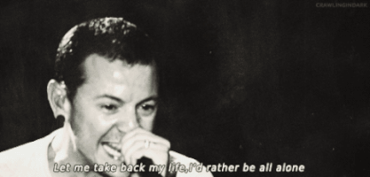
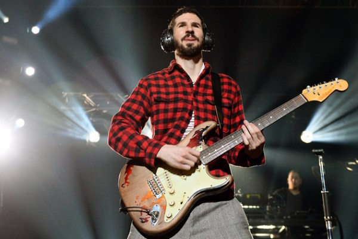
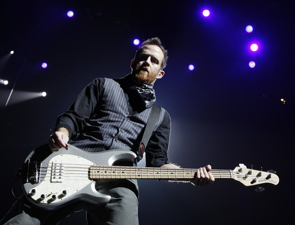

Integrantes de grupo.
En esta sección veremos y conoceremos un poco a los integrantes actuales de este grupo.
 CBtis 145.
CBtis 145.
En esta sección veremos y conoceremos un poco a los integrantes actuales de este grupo.

1999-presente voz, guitarra rítmica y percusiones.
Chester Bennington nació el 20 de marzo de 1976. Su ciudad natal es Phoenix, en el estado de Arizona. Vivió su infancia en medio de la desorganización familiar provocada por el divorcio de sus padres, cuando Chester apenas tenía nueve años, además de haber sufrido abuso sexual en su niñez.
Formó una banda llamada "Grey Daze" en el que Chester era el vocalista, pero acabó abandonando al grupo, porque según se dice, escribió varias canciones que el grupo decían ser suyas y no de Chester.
Un día, Chester recibió de un amigo suyo una maqueta que habían creado Mike, Brad, Rob y Joe, ya que buscaban un vocalista para el grupo que querían crear que más tarde recibiría el nombre de Linkin Park.
La mayoria de sus canciones inspiradas en el album Meteora son inspiradas en las dificultades que paso desde que era pequeño.
Mike Shinoda
1996-presente voz, guitarra rítmica y teclado.
Nació el 11 de febrero de 1977 en Agoura, California. Sus antepasados son japoneses que emigraron a partir de la II Guerra Mundial. Su padre, Leslie Shinoda, es japonés americano y su madre, Kim Shinoda, es europea americana.
Fue criado en Los Ángeles, en el suburbio de Agoura, donde residió durante toda su vida adolescente. Tiene un hermano llamado Jason Shinoda. El primer paso de Mike hacia el negocio de la música fue durante sus años de secundaria, cuando asistió a un concierto en el que se presentaron Anthrax y Public Enemy. Empezó a tomar lecciones de piano cuando era muy pequeño.
Es rechazado por su discográfica, ya que querían que solamente tocara el teclado y no rapeara, cosa que constituía cambiar totalmente el rumbo de su vida, sin embargo se abrió camino y ahora es conocido por darle ese estilo rap a Linkin Park.

Brad Delson
1996-presente guitarra líder, piano y percusiones.
Bradford Phillip Delson, conocido como Big Bad Brad (1 de diciembre de 1977), es el guitarrista líder de la banda de nu metal/rapcore Linkin Park. También es el A&R de Machine Shop Recordings.
Delson nació en Los Angeles, California. Se graduó en el High School de Agoura (California) en 1996 y fundó Xero con Mike Shinoda, que posteriormente se convirtió en Linkin Park. Asistió y se graduó en la Universidad de California (Los Ángeles) en la especialidad de comunicación
Durante la universidad, Delson tuvo que tratar con un miembro de la industria de la música como parte de su carrera. Terminó por trabajar para Jeff Blue, un A&R de Warner Bros. Records. Le comentó a Blue acerca de su banda y a cambio de darle demos para que los escuchara, Blue le hacía críticas constructivas. Además Jeff Blue fue quien encontró al actual vocalista de Linkin Park Chester Bennington.
Antes de crear Xero, el primer instrumento de Delson fue la trompeta. Su primera banda se llamaba Pricks y también tocó en una banda llamada Relative Degree con su compañero en Linkin Park Rob Bourdon. Conoció a su compañero de banda Dave Farrell en UCLA.
A Delson suele verse con un par de grandes auriculares en el escenario, al parecer, por puras razones estéticas, pues parecen no tener ninguna función durante los conciertos. Los auriculares son diseñados por Shinoda y cambian con cada lanzamiento. Delson nunca ha respondido con seriedad a por qué lleva los auriculares, normalmente evita tales cuestiones con respuestas ridículas como "Si te lo digo, tendré que matarte".
Delson se le conoce por sus comportamientos antisociales, como no lavarse a menudo durante las grabaciones, según cuenta su compañero Mike Shinoda. En high school, solía teñirse el pelo con gran variedad de colores, en la actualidad, lleva chinos largos.
Se le suele criticar por tocar partes simples de guitarra y nunca protagonizar solos. Ha explicado que esto se debe a la naturaleza simplista de la banda y al hecho de que intenta ajustar el sonido de su guitarra al teclado, la batería y a la música hip hop y electrónica de la banda.
Durante el verano de 2006, Linkin Park actuó en el Summer Sonic Festival invitados por Metallica. La banda tocó una canción llamada QWERTY en la que Delson hizo su primer solo de guitarra en una canción de Linkin Park.

Dave Farrell
1996-1998, 2001-presente bajo y coros.
David Michael Farrell, más conocido por Phoenix (8 de febrero de 1977), es el bajista del grupo de nu metal/rapcore Linkin Park.
Farrell nació en Plymouth, Massachusetts pero más tarde se mudó a Mission Viejo, California cuando tenía cinco años. Se graduó en la Universidad de California y toca el bajo, la guitarra eléctrica, el cello y el violín.
Farrell fue miembro de un grupo de ska cristiano conocido como Tasty Snax. Mientras asistía a la universidad, practicó con Brad Delson en su habitación. A pesar de esto, como tenía que viajar con su banda, los Tasty Snax, no pudo tocar con Delson y su banda, que se convertiría en Linkin Park. Tras cambiar su nombre a Snax, Farrell comenzó a tocar el bajo en la banda antes de abandonarla de nuevo para unirse a Linkin Park.
Farrell ha declarado que sus influencias han sido su madre y su hermano, Joe, al igual Weezer, The Beatles, Deftones, The Roots, Bob Marley, Sarah McLachlan, Hughes y Wagner.
Acorde con su alias, Phoenix (su apodo), tiene dos tatuajes del fénix en su espalda.
 Joe Hahn
1996-presente sintetizador, sampler, DJ, tornamesa y coros.
Joe Hahn
1996-presente sintetizador, sampler, DJ, tornamesa y coros.
Joseph Hahn, conocido también como Joe Hahn, Chairman Hahn o Mr. Hahn (Dallas, Texas, 15 de marzo de 1977) es un director de videos musicales, también conocido como el DJ en la banda Linkin Park. Joe tiene un alter ego llamado Remy.
Joseph "Joe" Hahn nació en Dallas, Texas el 15 de marzo de 1977 pero creció en Glendale, California. Hahn es de segunda generación América coreana.
Hahn se graduó de la Herbert Hoover High School en Glendale en 1995. Luego estudió en el Art Center College of Design de Pasadena, pero no se graduó. Hahn se unió a Linkin Park, llamada en ese entonces Xero, en 1997 como el DJ de la banda. Desde entonces, él ha dirigido la mayoría de los videos de la banda (excepto "One Step Closer","Crawling","Faint","Given Up" y "We Made It"). Hahn, junto con su compañero de banda Mike Shinoda, es responsable de la mayor parte de las ilustraciones de los álbumes de Linkin Park. Además, participó con Mike Shinoda en su producción The Rising Tied, del proyecto alterno de Hip Hop Fort Minor. A Joe se le ocurrió el concepto de One Step Closer y ha estado involucrado en todos los demás videos. Él es el director oficial de los videos para la banda.
Hahn se convirtió en el primer coreano estadounidense en recibir un Grammy cuando la banda ganó el premio 2002 de Mejor Interpretación de Hard Rock.
Rob Bourdon
1996-presente batería.
Robert Gregory «Rob» Bourdon (20 de enero de 1979)1 es el baterista de la banda de Nu metal y Rock alternativo Linkin Park.
Robert Gregory Bourdon nació el 20 de enero de 1979. Rob nació en Calabasas, California y ahora vive en Los Ángeles. Su padres son Gregory y Patty; tiene un hermano menor llamado Dave. Creció en la misma ciudad que los miembros de Incubus y fue a la escuela con los miembros de Hoobastank.
Rob comenzó a tocar la batería a la edad de 10 años tras ver un concierto de Aerosmith. Ya que su madre, Patty, fue la ex novia de Joey Kramer, el baterista de Aerosmith, Bourdon pudo estar en el backstage y ver toda la producción. Kramer también dio a Rob un pedal de bombo. A Rob también le gusta tocar piano cuando tiene tiempo. Rob acostumbraba a tomar lecciones cuando era joven y forzado a seguir.
En sus primeros años de adolescencia, Bourdon tocó en algunas bandas con sus amigos. Fue en esa época que conoció a su actual compañero de banda Linkin Park, Brad Delson, y tocaron juntos durante un año en un grupo llamado Relative Degree. Su meta era tocar en el Teatro Roxy, después de lograr su objetivo con un espectáculo sell-out, Relative Degree finalmente se disolvió. En 1995, Delson, Mike Shinoda y Bourdon formaron Xero que se convertiría en el punto de partida para Linkin Park.